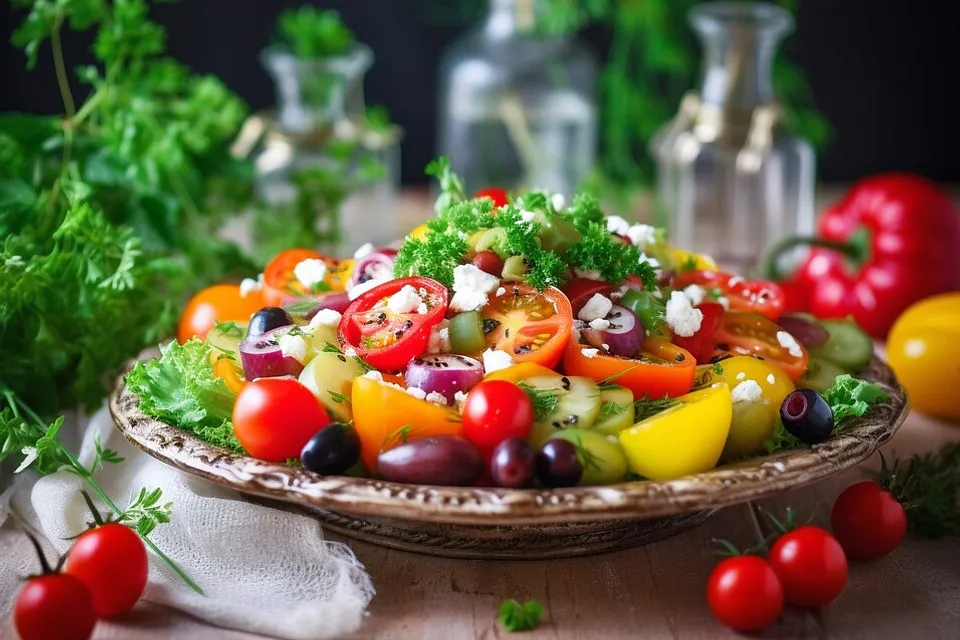

Sommerlicher Salat
 20 Min.
20 Min.
 simple
simple
 19.11.2018
19.11.2018
Zubereitung
 Arbeitszeit ca. 20
Minuten
Arbeitszeit ca. 20
Minuten
 Gesamtzeit ca. 20
Minuten
Gesamtzeit ca. 20
Minuten
Die Paprikaschoten waschen, entkernen und in kleine Würfel schneiden. Die Gurke schälen, halbieren, vierteln und in kleine Stücke schneiden. Die Tomaten waschen und halbieren, Lauchzwiebeln in dünne Ringe schneiden, alles in eine große Schüssel geben, Feta mit Öl und Oliven dazu geben, mit Salz und Pfeffer würzen, noch einen guten Schuss Essig dazu und soviel Dill, wie man mag dazu geben. Durchmischen, etwas ziehen lassen, fertig. Lecker zum Grillen oder auch nur so mit Rusticana Baguette oder Weißbrot.
Rezept erstellt von
Andre